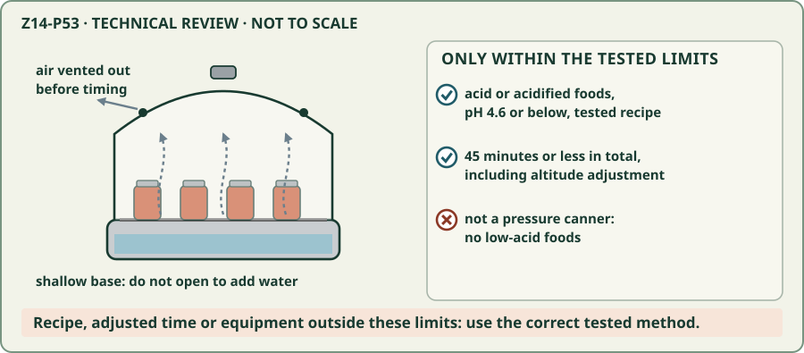

Z14-P53 · Food production and preservation · New manuscript
Respect strict limits of validated atmospheric-steam canners
Use modern atmospheric-steam canners safely ONLY for tested high-acid short-duration recipes without running dry or misapplying to low-acid foods.
When it applies · Tested high-acid foods (pH ≤ 4.6) processed in an atmospheric-steam canner equipped with an accurate dome temperature indicator.
Equipment · Atmospheric-steam canner with validated dome temperature sensor, tested high-acid recipe, and local elevation table.

Actions
- Use atmospheric steam canning only for an applicable high-acid or acidified tested recipe and compatible equipment. It cannot replace pressure canning for low-acid foods.[P25]
- Follow the tested steam-canning procedure. The total processing time, including elevation adjustment, must be 45 minutes or less.[P25]
- Vent and monitor steam temperature according to the validated instructions and exact equipment. Maintain these conditions without running dry.[P25]
Failure recognition · Attempting to process low-acid green beans in an unpressurized steam canner, or running a 55-minute high-altitude tomato batch until the shallow base boils dry.[P08, P07]
Verify · Confirm the tested recipe, compatible equipment and altitude-adjusted time within the 45-minute limit.[P25]
Stop or change course · If the recipe, elevation-adjusted time or equipment fails the validated conditions, select the correct tested procedure instead.[P25, P07]
Evidence and editorial notes
- P07 · USDA / NCHFP · How to Use Boiling Water and Pressure Canners (Current web edition)
- Section: Using Pressure Canners; venting; operating at elevation; pressure interruption · Conditions: Validated USDA/NCHFP low-acid process, listed equipment, actual elevation
Support: Vent continuously for ten minutes before pressurizing. Select the tested product, gauge, altitude, pressure and time combination. If pressure drops below target, restore it and restart the full process time.
Limitations: No generic pressure schedule or guarantee. Confirm dial-gauge accuracy according to the reference and obtain Extension guidance on deviations. · Conflicting evidence: See A02 claim audit for boundaries.
Editorial note: Core low-acid botulism-prevention boundary in Z14. · Specialist reviewer: Food microbiology and Extension preservation specialist
Primary source · checked 2026-11-25 - P08 · NCHFP · Using Boiling Water Canners (current web edition)
- Section: Using Boiling Water Canners · Conditions: Tested high-acid or acidified recipe with a validated water-bath process
Support: Use the tested recipe’s equipment and full time including altitude adjustment. Keep required water cover and a continuous boil.
Limitations: Atmospheric steam has a separate validated scope; tomato acidification is P22. · Conflicting evidence: See A02 claim audit for boundaries.
Editorial note: Separates high-acid vs low-acid canning gates cleanly. · Specialist reviewer: Food preservation and Extension specialist
Primary source · checked 2026-11-24 - P25 · USDA / NCHFP · National Center Burning Issue: Using Atmospheric Steam Canners (Current web edition)
- Section: Conditions for safe atmospheric steam canning · Conditions: Approved high-acid or acidified food and tested adapted boiling-water recipe
Support: Use the research-tested temperature, steam and equipment conditions and limit total processing to 45 minutes or less including elevation.
Limitations: No substitution for a pressure canner or allowance for uncertain temperature or running dry. · Conflicting evidence: See A02 claim audit for boundaries.
Editorial note: Added in A02 to separate a consequential source boundary. · Specialist reviewer: Extension food preservation
Primary source · checked 2026-11-25
Current assessment · W2C-E023-P25 (2026-11-25) · Source conflict: the later guidance governs on this card: The later NCHFP guidance governs Z14-P53 within its stated limits. Limits: Specialist should confirm that the NCHFP guidance remains current.
Source lineage · NCHFP / University Extension Steam Canning Guidance; new manuscript · Classification · New manuscript.